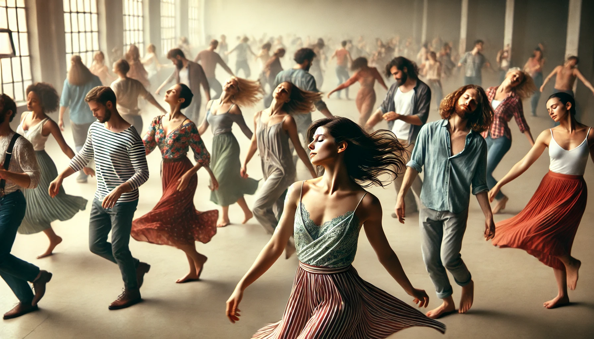

Meditación Nataraj
La meditación Nataraj es un baile como una meditación total. Al desaparecer en la danza y relajarse en el silencio y la quietud, emprendes un viaje hacia el interior. El objetivo es perder la noción de uno mismo y estar completamente inmerso en la danza. Como se dice, "Olvídate del bailarín, conviértete en la danza."
Para practicar esta meditación: Descargue el audio y escúchelo mientras sigue los pasos a continuación.
1. Primera etapa: 40 minutos
Con los ojos cerrados, baila como si estuvieras poseído. Deja que tu inconsciente tome el control por completo. No controles tus movimientos ni observes lo que está sucediendo, simplemente sumérgete totalmente en el baile.
2. Segunda etapa: 15 minutos
Mantén los ojos cerrados y acuéstate de inmediato. Permanece en silencio e inmóvil.

3. Tercera etapa: 5 minutos
Baila en celebración y disfruta.